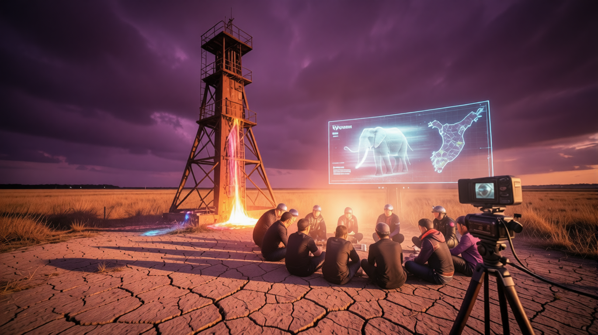

Hover or tap for frame 2
← Older
Newer →
⏮
Ready to play
⏯
Press play to start the briefing...
Read Source Article
Show Full Transcript
![Patch Notes v2026.31.3-22.39 — A wide 16:9 cinematic shot of a cracked, parched English meadow under a heavy, bruised violet sky. In the center, a towering, rusted industrial mineral extractor stands like a skeletal monument, leaking glowing neon fluid into the dry earth. Beside it, a group of people in high-tech festival gear sit in a circle around a flickering holographic display showing a dying elephant and a map of Kyushu. A vintage 1970s news camera on a tripod sits in the foreground, its lens reflecting a shimmering heat haze. The lighting is harsh, golden-hour orange clashing with deep synthwave purples.](cover.png)